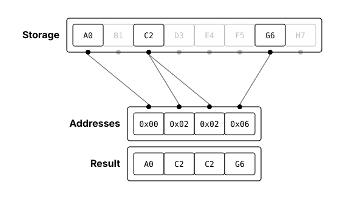
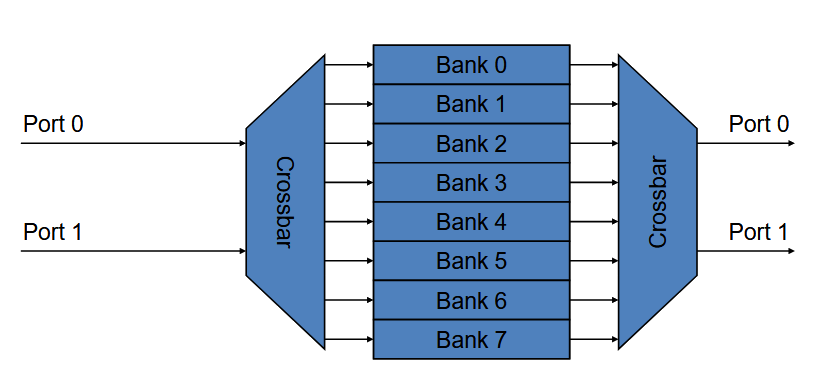
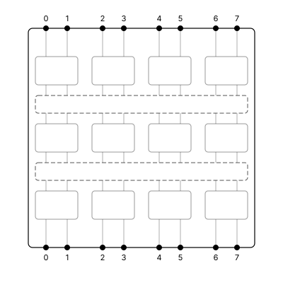
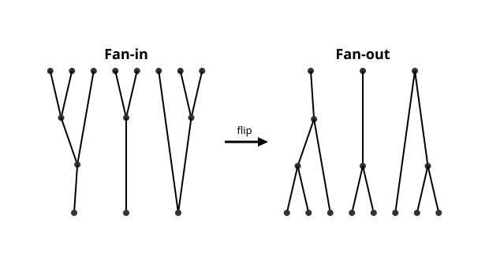
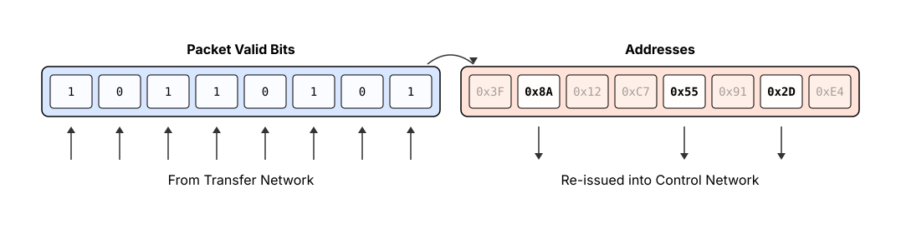
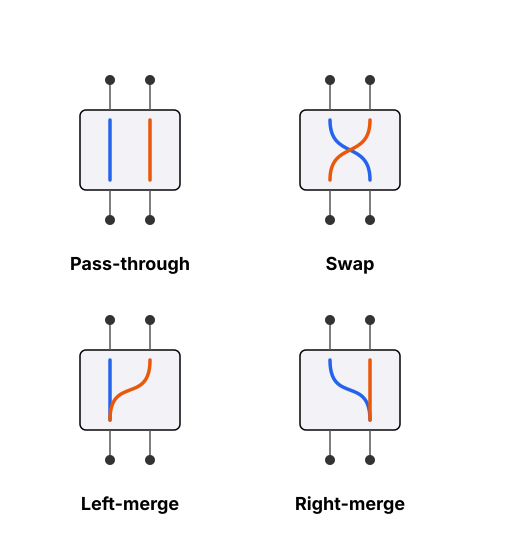
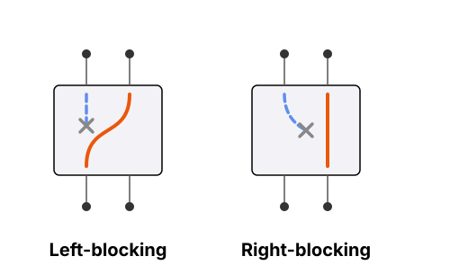
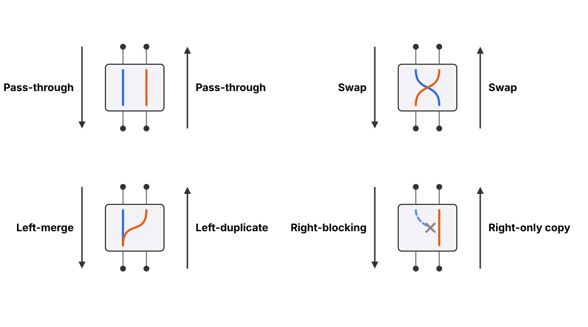

Echo Cache for Codebook Decompression of LLM Weights
A multiported, scalable hardware cache for wide gather operations
The Problem
As discussed in Prerequisite Concepts, inference in codebook compressed LLMs requires reconstructing (i.e. decompressing) the weight matrices like so:
for idx in indices:
weight_group = codebook[idx]
If we try to vectorize this, each thread does an independent codebook[idx], making this a
gather operation:

The issue is that indices are ~random. We have to assume each thread accesses arbitrary codes and therefore we cannot use coalesced reads. This random access traffic causes bank conflicts and serialization. One solution is duplicating the codebook across shared memory banks, but on GPUs, the number of threads per SM exceeds the number of shared memory banks, and each bank is not large enough to store the entire codebook. In any case, duplication occupies cache space that could have been used otherwise.
The problem is even worse on TPU hardware, whose VPU is entirely designed around wide, coalesced loads, not irregular access or gather/scatter ops.
The inference speed is therefore limited by the speed of the gather op, and this is well known by authors. The QTIP authors mention duplication being a limiter of codebook size. Similarly, the VQ-LLM authors measure inefficiency caused by bank conflicts and serialization.
I posit that the only flexible solution to making LLM codebook compression viable is to solve the bank conflict problem at the hardware level, with a dedicated cache designed for gather ops. To this end, we should first recap why banking and serialization is needed at all.
Read-Ports and Banks
Every on-chip cache has a certain number of read-ports, determining how many read-requests it can serve at once. It can be seen that the speed of a gather op directly depends on the number of read-ports.
The first issue is that you cannot create SRAMs with a huge number of read-ports because the area and energy scales super-quadratically with port count. 2 or 4 read-ports is as far as you can push it (unless banks are tiny).
Enter: banking. Use multiple SRAMs with few "true" read-ports and attach them with an interconnect to create a larger number of "virtual" read-ports. This interconnect is usually a full crossbar, a kind of network topology that provides a unique path between every virtual port and true port.

But crossbars have similar scaling issues: crossbars have $O(N^2)$ complexity. We cannot have hundreds of read-ports because the crossbar interconnect's area and routing complexity would blow up.
This explains the mismatch in GPUs: each SM has thousands of resident threads, yet the shared memory has only 32 read-ports (with each bank being single-ported). If we want to feasibly scale the number of virtual ports and speed-up very wide gathers, we have to replace the crossbar.
Multistage Interconnection Networks
Multistage Interconnection Networks (MINs) were designed to solve exactly this problem. MINs have even been historically applied to very similar use cases. MINs connect sources to destinations using a grid of switches, and some kind of network topology connecting them:

Each switch is small and only handles routing a few signals. 2x2 is a common switch size, i.e. 2 inputs routed to 2 outputs. Each switch has a switch state, describing what routing decision it's making. For example, a 2x2 switch could swap its inputs, or route one input to both outputs, etc. The wiring topology allows for these small switches to handle any number of overall inputs and outputs.
The core advantage of MINs is that they typically have $O(N \log N)$ complexity, as opposed to crossbar's $O(N^2)$. This makes MINs attractive to us. If we can connect true ports to virtual ports through a MIN instead of a crossbar, hundreds of virtual ports can become viable.
MINs can be complex to learn and this article is not the right place to learn about them for the first time. The Prerequisite Concepts page includes a list of resources to learn about MINs.
Self-Routing MINs
The next question is: how are switch states set? To achieve a desired overall routing, each switch must be set appropriately. For most MINs, such as Beneš Networks, we need a central controller, i.e. some algorithm that calculates switch states. The problem is that MIN routing algorithms are complex in themselves. There is no point in trying to use MINs to speed up gathers, if the routing algorithm computation itself is expensive.
We can instead look to self-routing MINs. Instead of a central controller, the packets flowing through the network contain their output addresses, and each switch makes its own, local decision based on some simple rule. You simply inject packets into the MIN, and they find their own way through the network. Omega Networks are one of the simplest types of self-routing MINs, where each switch makes a decision based on one bit of the packet address field.
The Echo Cache
Our task now is to design a bank $\leftrightarrow$ virtual-port interconnect that:
- Uses MINs instead of crossbars
- Incurs a low amount of serialization
For this, I present the Echo Cache:
- Use a self-routing MIN as the interconnect between cache-banks and virtual read-ports
- In phase 1, make addresses travel across the interconnect, from virtual ports to banks
- In phase 2, make data travel from banks to virtual ports, tracing the same route the address packets took in phase 1, except in reverse
Hence the name: Echo Cache. Addresses travel to banks, data returns back like an echo. And since a MIN is used instead of a crossbar, it can be feasibly scaled to hundreds of virtual read-ports with feasible wire lengths and routing congestion.
In addition, the switches in the MIN have to be given a packet merging capability. This allows the banks to do fan-out data transport, i.e. broadcast. This significantly reduces the amount of serialization that takes place, since if two read-ports want the same address, the data can be replicated in the MIN, and broadcast to all requesting ports. A large number of read-ports can receive their data in parallel.
Hence, both aforementioned requirements are satisfied.
The Echo Cache design has prior art such as the NYU Ultracomputer
In that context, MINs with merging capability were used to connect CPUs to memory modules. Quite similar to what we're doing here. However the control phase and retry logic mechanisms are novel.
Detailed Explanation

The design uses a pair of MINs: the control network and the transfer network. Both are self-routing, and switches make their own local decisions. The control network deals with address packets and the transfer network deals with data packets.
First, address packets are injected from the read-ports and make their way through the self-routing control network. Then, switch states are copied to the transfer network, and data packets flow from banks back to read-ports, following the same paths in reverse.
The control network essentially only performs a "dry-run", that the transfer network replays in reverse to transport data packets. This retains the advantage of self-routing MINs: no central controller algorithm needs to be used to compute switch states. The control network is the algorithm.
Now, most self-routing MINs have chances of packet collisions or blocking, i.e. when two packets at a switch input want to both go to the same output wire. In this case, one packet must be dropped. However, if both packets are ultimately going to the same bank, then instead of dropping, both packets can be merged.
On the way down, packets merge and form a fan-in routing. When reversed, packets replicate and form a fan-out routing. This is the core mechanism behind the fan-out/broadcast capability of the Echo Cache.

[2, 2, 3, 5, 5, 5, 6, 6]. Note how requests are merged and duplicated. Multiple ports
demanding the same address does not cause blocking here. The network naturally handles multicast.
But this presents an issue: if some packets are dropped in the control phase, those read-ports will never receive their data. To solve this, we include retry logic, that sees which read-ports successfully receive valid data, and selectively re-issues the rest back into the control network:

This is a form of serialization (hence why I mentioned that serialization is reduced, and not eliminated). However, the probability of blocking depends on the MIN topology chosen. If we use designs like dilated networks or asymptotically nonblocking networks, probability of blocking is reduced, and we have to serialize rarely, maintaining high system throughput.
No. The control and transfer phases can technically be done on a single physical network, provided
that switches are truly bidirectional, which would require inout wires and
high-z/tri-state logic.
In fact, more than 2 networks can also be used. We can use multiple transfer networks to divide the workload of carrying wide-bitwidth data. This can potentially reduce wire congestion.
Switch States
To better understand the functioning of the Echo Cache, let's take the example of a MIN using 2x2 switches. The following diagrams explain the different states each switch can be in:



Figure 9 demonstrates switch behaviour in both directions. For example, let's say a switch in the control network decides on the "left-merge" state, i.e. it merges two address packets and forwards them to the left output. Then in the transfer network, the corresponding switch will operate in reverse, i.e. it will duplicate a data packet, enabling multicast behaviour.
RTL Functional Model
I developed a proof-of-concept RTL implementation and testbench for the Echo Cache utilizing 2x2 switches with the Omega Network topology. The full code can be found here. It proves that the concept works, and the retry logic is sound.
Let's look at the switch modules. This should give an idea of the packets flowing through both networks, and the core logic of the switches:
// ****************** Packet Layouts ******************
// Address Packet: {valid, addr} *
// Data Packet: {valid, data} *
// *
// RULE: When valid = 0, data/addr = 0 as well *
// ****************************************************
// ****************** Control Switch ******************
// Input Packets: in0, in1 *
// Output Packets: out0, out1 *
// *
// Routing decision stored in: did_swap, did_merge: *
// 1) (0, 0): Passthru *
// 2) (1, 0): Swap *
// 3) (0, 1): Merge left *
// 4) (1, 1): Merge Right *
// ****************************************************
module ctrl_switch #(
parameter ADDR_WIDTH = 3,
parameter STAGE_BIT = 0
) (
input wire clk,
input wire rst,
input wire [ADDR_WIDTH:0] in0,
input wire [ADDR_WIDTH:0] in1,
output reg [ADDR_WIDTH:0] out0,
output reg [ADDR_WIDTH:0] out1,
output reg did_swap,
output reg did_merge
);
localparam PKT_WIDTH = ADDR_WIDTH + 1;
localparam [PKT_WIDTH-1:0] ZERO_PKT = {PKT_WIDTH{1'b0}};
// Read packets
wire in0_valid = in0[PKT_WIDTH-1];
wire in0_wants_right = in0[STAGE_BIT];
wire in1_valid = in1[PKT_WIDTH-1];
wire in1_wants_right = in1[STAGE_BIT];
// Switch decision
wire do_swap = in0_valid ? in0_wants_right :
in1_valid ? ~in1_wants_right :
1'b0;
wire do_merge = in0_valid && in1_valid && (in0[ADDR_WIDTH-1:0] == in1[ADDR_WIDTH-1:0]);
// Output crossbar
wire [ADDR_WIDTH:0] xbar0 = do_swap ? in1 : in0;
wire [ADDR_WIDTH:0] xbar1 = do_swap ? in0 : in1;
// Kill misrouted packet
wire kill0 = xbar0[STAGE_BIT] == 1'b1;
wire kill1 = xbar1[STAGE_BIT] == 1'b0;
// Final ouput packets
wire [ADDR_WIDTH:0] final_out0 = kill0 ? ZERO_PKT : xbar0;
wire [ADDR_WIDTH:0] final_out1 = kill1 ? ZERO_PKT : xbar1;
// Register outputs
always @(posedge clk) begin
if (rst) begin
out0 <= ZERO_PKT;
out1 <= ZERO_PKT;
did_swap <= 1'b0;
did_merge <= 1'b0;
end else begin
out0 <= final_out0;
out1 <= final_out1;
did_swap <= do_swap;
did_merge <= do_merge;
end
end
endmodule
// ****************** Transfer Switch ******************
// Input Packets: in0, in1 *
// Output Packets: out0, out1 *
// *
// Switch takes decision from (did_swap, did_merge) *
// inputs, and follows them in reverse *
// *****************************************************
module xfer_switch #(
parameter DATA_WIDTH = 8,
parameter STAGE_BIT = 0
) (
input wire clk,
input wire rst,
input wire [DATA_WIDTH:0] in0,
input wire [DATA_WIDTH:0] in1,
input wire did_swap,
input wire did_merge,
output reg [DATA_WIDTH:0] out0,
output reg [DATA_WIDTH:0] out1
);
localparam PKT_WIDTH = DATA_WIDTH + 1;
localparam [PKT_WIDTH-1:0] ZERO_PKT = {PKT_WIDTH{1'b0}};
// Reverse the crossbar using stored swap decision
wire [DATA_WIDTH:0] xbar0 = did_swap ? in1 : in0;
wire [DATA_WIDTH:0] xbar1 = did_swap ? in0 : in1;
// Merge case: Choose the valid packet to multicast
wire [DATA_WIDTH:0] merge_chosen = in0 | in1;
wire [DATA_WIDTH:0] final_out0 = did_merge ? merge_chosen : xbar0;
wire [DATA_WIDTH:0] final_out1 = did_merge ? merge_chosen : xbar1;
// Register outputs
always @(posedge clk) begin
if (rst) begin
out0 <= ZERO_PKT;
out1 <= ZERO_PKT;
end else begin
out0 <= final_out0;
out1 <= final_out1;
end
end
endmoduleTopology PnR Experiments
To show that the Echo Cache is more scalable than crossbars with hundreds of virtual read-ports, let's perform a test PnR implementation on just the core topologies alone, i.e. compare crossbar with Omega Network MIN from a topology-only, pure PnR perspective.
The code for this test can be found here.
The topology-only RTL was implemented on the SKY130 process using SiliconCompiler.
Both Echo and Crossbar tests have the same config: 32 inputs, 32 outputs and 8 bit data, and were
implemented with the same flow and same utilization ($40\%$). The crossbar RTL implements a standard
crossbar grid, and the echo RTL implements two omega networks. Both have the same top level pins,
similar pin placement constraints, and both use simple mux2 switches.
| Metric | Crossbar | Echo |
|---|---|---|
| Switch Count | $992$ | $352$ |
| Stdcell Area ($\mu\mathrm{m}^2$) | $93{,}602$ | $33{,}334$ |
| Total Die Area ($\mu\mathrm{m}^2$) | $234{,}658$ | $83{,}732$ |
The echo topology has ~$65\%$ lower die area and switch count than crossbar topology. Since crossbar has $N^2$ switches, and echo has $2N \log N$ switches, the difference in area will become even more dramatic at higher port counts.
This is only an stdcell PnR demonstration. Realistically, bank interconnects will be custom/semi-custom designs. But the algorithmic limitations of crossbars remains no matter what.
Conclusion
In this article we started with LLM codebook compression, and discussed how random access patterns during decompression cause bank-conflicts and serialization. We saw why the number of virtual read-ports in a typical banked cache design is limited by the $O(N^2)$ complexity of the crossbar interconnect.
To solve this, we introduced the Echo Cache, a dual phase design that replaces the crossbar with Multistage Interconnection Networks, which have a cheaper $O(N \log N)$ complexity. Addresses travel from read-ports to banks, and then data travels from banks to read-ports, tracing the same path in reverse.
We confirmed functionality with an RTL model, and then performed a topology-only PnR test on the SKY130 process, which proved Echo Cache's superior area scaling relative to a crossbar for the same number of ports, a gap that only widens with port count.